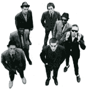

THE SPECIALS

The Specials formed in Coventry in 1977. Originally called the Automatics they tried to play a mixture of punk and reggae, but it didn’t quite work.
Ska, a faster rhythm was adopted and blended much better with the punk sound. With this new sound came a new name, the Specials. Unable to get a record deal the band financed their first single ‘Gangsters’ in 1979 and so began the assault on the nations charts.
The band were very socially and politically aware, this can be seen in many of their songs such as ‘Too Much Too Young’, a tale of teenage pregnancy, ‘It Doesn’t Make It Alright’, a track condemning racial prejudice.
The highlight of the bands career came in the summer of ’81, with the number one hit ‘Ghost Town’.
What made the band so unique apart from the fact that they were multi-racial was their sound. The band was made made up of seven very different indivduals with different musical tastes and each one brought his style to the overall sound. These styles included rock ‘n’ roll, soul and blues. Roddy’s job in the band was to play a rock ‘n’ roll guitar riff over the ska beat.
Elvis Costello, who produced the Specials’ first album thought that Roddy should be replaced as guitarist, but later realised that his style of playing added to the groups appeal.